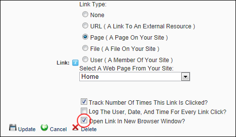

How to set a link to either open in a new Web browser window or open in the same window using the Link Control.
Note: This tutorial assumes you are viewing the Link Control, typically located on a Settings page or displayed on an Edit Item page when adding/editing an item such as a link on a module.
